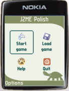
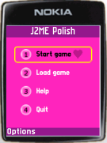
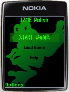

J2ME Polish is the answer to today's challenges in the mobile world. Extremely versatile and powerful, yet easy to use!
2007-03-17: The fourth and last release candidate of J2ME Polish 2.0 provides fixes for UI and postcompiler problems, updated device database (Samsung) and small feature enhancements like calculations within CSS attributes: changelog.
|
Learn how to visually develop mobile applications with J2ME Polish and NetBeans on the Java One 2007 in San Francisco, Technical Session 9452! |
The third release candidate of J2ME Polish 2.0 fixes problems with NetBeans, Java 1.4 installers, repaints on Nokia Series 60 devices and some rather tricky RMI and serialization problems.
 |
Please visit us on the 3GSM Worldcongress on exhibition stand A86 in Hall 2, Level 1 - 12.-15. February 2007 in Barcelona! Visitors will be able to obtain J2ME Polish licenses with a discount of 30% ! |
 |
2007-02-21: J2ME Polish 2.0 Release Candidate 3 is here. Enjoy these indespensable new features: |
Please check out the current release candidate.
J2ME Polish is suite of tools for creating "polished" J2ME applications.
Each tool meets a definite need
of J2ME developers:
Build-tools with an integrated device-database,
a powerful GUI, a framework for building localized applications,
a game-engine, a logging framework and a collection of utilities.
|  |  |  |
| These screenshots show the optional GUI of J2ME Polish in action. These pictures show the same application with different designs. Absolutely no changes were made in the source code of the application. Have a look at the screenshots-page for more examples and details. | ||
If you're new to J2ME Polish, you might want to
take the tour first:
 in English,
in Chinese,
in English,
in Chinese,
 in Spanish,
or
in Spanish,
or
 in German.
in German.
Also have a look at the features-page, get acquainted with J2ME Polish in the tutorial or learn more about the Pro J2ME Polish book.
J2ME Polish is a stable & complete solution for Windows, Linux and Mac OS X. With over 100 downloads per day, J2ME Polish is rapidly becoming the de-facto standard for developing J2ME applications. Please download the latest version (J2ME Polish <%= PolishVersion %>).

J2ME Polish is available under the Open Source license GPL as well as under commercial licenses.
| J2ME Polish is OSI Certified Open Source Software. OSI Certified is a certification mark of the Open Source Initiative. | J2ME Polish is hosted on berliOS. | J2ME Polish is linked on java.net. | ||
|
|
|
<%include end.txt %>